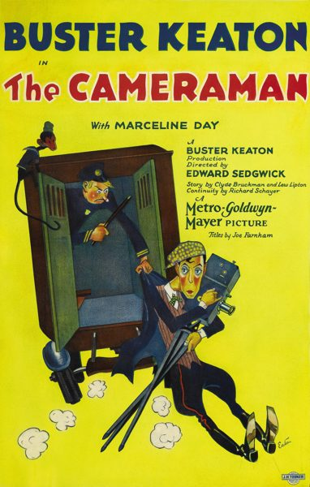

The Cameraman

Starring: Buster Keaton, Marceline Day, Harold Goodwin
Director: Edward Sedgwick, Buster Keaton
Writer: Clyde Bruckman
Producer: Buster Keaton, Lawrence Weingarten
The Cameraman is a 1928 American silent romantic comedy film directed by Edward Sedgwick and an uncredited Buster Keaton. The picture stars Keaton and Marceline Day. It was Keaton's first film under contract to Metro-Goldwyn-Mayer. The following year, however, MGM refused to let Keaton continue with creative control over his pictures, causing lasting damage to his career from which Keaton never really recovered.
Watch Online: Internet Archive
Trivia
- On January 26, 1928, Keaton signed a two-year deal with Metro-Goldwyn-Mayer.
- The deal required 2 films per year from Keaton and paid him $3,000 a week, making him the third highest-paid actor at the studio.
- Keaton brought most of his own crew with him from his own independent production company.
Filming Locations
- Los Angeles
Previous Showings
4 Runs • 2 Festivals
All runs on record (4):
- January 18, 1990w/ The General
- October 25, 1992
- August 18, 2004Summer 2004: Sixty-one Classic Movies, including 10 with Ronald Reagan and 9 Silw/ Speak Easily
- July 29, 2011Summer 2011w/ The Navigator